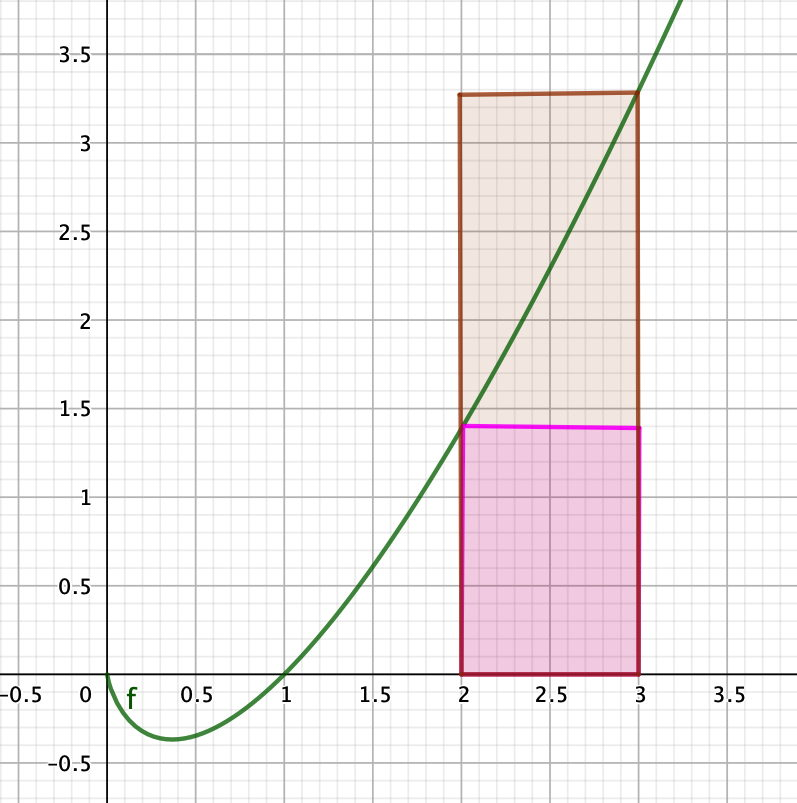

Capítulo 2 El infinito no existe
En esta asignatura hablaremos una y otra vez del infinito: sucesiones infinitas, sumas infinitas, funciones que tienden al infinito… y también hablaremos a menudo de infinitesimales: números o distancias infinitamente pequeños. Conviene empezar por afirmar una realidad: el infinito no existe. Y lo infinitamente pequeño, tampoco.
El infinito es una abstracción matemática que nos es muy útil y por eso la hemos creado y por eso aparece tanto. Pero en realidad no existe. Es más, los límites de lo finito pueden estar sorprendentemente cerca. Sabemos que hay 10 números naturales que podemos escribir con una cifra, 100 números que podemos escribir con dos cifras, 1000 con 3 cifras y en general \(10^n\) números con \(n\) cifras. Si queremos escribir todos los números de una cifra, del 1 al 9, nos basta un lápiz, una hoja de papel y unos segundos. Si queremos escribir todos los de hasta dos cifras, del 1 al 99, sigue bastando una hoja de papel, pero necesitaremos un minuto o dos. Si quisiéramos escribir todos los de 4 cifras, del 1 al 9999, necesitaríamos un cuaderno y un par de horas. Si quisiéramos escribir todos los de 6 cifras necesitaríamos una semana y una caja de cuadernos. Si pudiéramos escribir en átomos y cogemos un átomo y escribimos el 1, cogemos otro átomo y escribimos el 2, y así sucesivamente, ¿de cuántas cifras sería el número que escribiríamos en el último átomo del universo? No muy grande: de sólo unas 80 cifras. El infinito no existe.
Lo que llamamos infinito y escribimos como \(\infty\) es una abstraccion matemática. Es algo que es más grande que cualquier cosa que podamos producir. Es un número más grande que cualquier número que podamos escribir. Es el crecimiento ilimitado. Decimos que hay infinitos números enteros porque dado cualquier número que se nos ocurra, hay uno más grande. Y otro más grande que ese.
2.1 Infinitos en números
Un lugar donde aparece este concepto de infinito, donde necesitamos este concepto de infinito, es en el número real, ya que un número real puede tener infinitos decimales. Luego si el infinito no existe, el número real, tampoco. Y es cierto: siempre que acabamos con un cálculo y un número, este número tiene un número finito de decimales. Si usamos una calculadora, probablemente tenga 10 a 12 decimales. Si usamos un ordenador potente, unos 16. Nunca tenemos uno con infinitos decimales.
Es cierto que podemos trabajar con \(\pi\) o con \(\sqrt{2}\), que tiene infinitos decimales, pero en cuanto lo convirtamos en algo que usemos –una distancia, un tiempo, un peso– lo recortaremos, lo redondearemos, a un número pequeño de decimales. Y deja de ser pues, un número real.
Pero necesitamos los números reales. Sin números reales no tendríamos derivadas, ni integrales, ni casi ninguna de las herramientas del cálculo que han hecho posible entender el funcionamiento de la naturaleza y el avance científico. El número real, y el infinito, es una abstracción que no existe pero que nos es imprescindible.
2.2 Lo infinitamente pequeño
Un término que aparece mucho en el cálculo es del del diferencial (o infinitesimal), que a veces se define como algo infinítamente pequeño. Naturalmente, si el infinito no existe, lo infinítamente pequeño, tampoco. Muchos matemáticos han considerado que pensar en el diferencial como algo infinitamente pequeño es un error, como dijo el filósofo británico Berkeley, hablar de los “fantasmas de cantidades desvanecidas”. Es mejor pensar en el diferencial, y así lo haremos, como algo muy pequeño, pero finito y pero al que asociaremos el proceso de hacerlo cada vez más pequeño y ver qué pasa. Así pues, un diferencial de una magnitud \(x\) será una cosa muy pequeña, que llamaremos \(dx\) y que haremos tender a cero. Aquí es donde entra la abstracción: el \(dx\) es algo concreto, finito, real. La abstracción es el proceso de hacerlo tender a cero. Es una abstracción fundamental, base de buena parte del cálculo.
2.3 El uso de las matemáticas
El concepto del infinito y del diferencial y el uso que hacemos de él nos permite entender mejor el uso que hacemos de las matemáticas.
Partimos de unas medidas reales de tiempo, espacio, voltajes o lo que sea. Lo que obtenemos tiene un precisión finita, luego no son numeros reales. Trasladamos estas mediciones al mundo matemático, con infinitos y por lo tanto números reales. Esto nos permite integrar, derivar, resolver ecuaciones… hacer uso de toda la potencia de las herramientas matemáticas para obtener resultados como números reales. Y estos resultados los volvemos a trasladar al mundo natural. Este paso por el mundo conceptual de las matemáticas nos ha permitido llegar mucho más lejos, más rápido y con más facilidad que si nos hubiéramos quedado todo el rato en el mundo natural. Esa es la potencia de la abstracción matemática.
Y sí, el pensamiento abstracto es más árido. Y sí, requiere precisión y rigor, lo que lo hace más exigente. Y sí, pierdes el sentido de utilidad directa que tiene lo real –sea un martillo o una manzana– pero despreciando la abstracción y el rigor, sin avanzar en la teoría (aunque no sepas muy bien para qué), nunca llegarás muy lejos en este mundo real.
2.4 Preguntas y problemas
Prob 2.1 Queremos calcular el área bajo la curva de la función \(f(x) = x \log(x)\) entre \(x = 1\) y \(x = 5\). Vamos a aproximar el área con rectángulos. Empecemos con 4 rectángulos de anchura 1. Fijémonos en el rectángulo que va desde 2 a 3. La anchura del rectángulo es 1, pero la altura del rectángulo la podemos escoger desde el extremo inferior, \(f(2) = 1.39\), que es el rectángulo magenta, o desde el extremo superior, \(f(3) = 3,30\), que es el rectángulo marrón.

Calcule las dos aproximaciones al área con 4 rectángulos cogidos de primero de una manera, después de la otra.
Repita ahora con 8 rectángulos y con 16 rectángulos y más si quiere. Esto se puede hacer bastante rápido con una hoja de cálculo.
¿Le parece que ambas aproximaciones van hacia el mismo número?
Prob 2.2 Se puede demostrar que \[\sum_{n = 1}^{\infty} \frac{1}{n^{2}} = \frac{\pi^{2}}{6}\]
Calcule una aproximación de \(\pi\) sumando 10 términos. Repita sumando 20 términos y 50 términos (hacer esto con calculadora es lento, pero con una hoja de cálculo es fácil y rápido). Indique la diferencia con el valor “real” de \(\pi\) de cada una de las 3 aproximaciones.
Prob 2.3 El número \(e\) se puede calcular como la suma infinita \[ e = \frac{1}{0!} + \frac{1}{1!} + \frac{1}{2!} + \frac{1}{3!} + \cdots + \frac{1}{n!} + \cdots\]
Escriba un pequeño programa (o cree una hoja de cálculo) para calcular una aproximación de \(e\) sumando los términos necesarios para que la diferencia con el valor “real” de \(e\) sea menor que 0,001. ¿Cuántos términos necesita? Repita para diferencias menores que 0,00001 y 0,00000001.
Prob 2.4 La posición de un coche en función del tiempo viene dada por la función \(pos(t) = 50(1 - e^{-0,2t})\). Sabiendo las posiciones en un instante inicial y un instante final podemos calcular la velocidad media del coche en ese periodo de tiempo. Calcule las velocidades medias con \(t_{i} = 5\) como instante inicial y \(t_{f} = 10\) como instante final.
Podemos obtener una aproximación a la velocidad instantánea en \(t=5\) acercando más y más el instante final al inicial. Calcule las velocidades media para \(t_{f} = 6\), \(t_{f} = 5.5\), \(t_{f} = 5.1\) y \(t_{f} = 5.01\).
A partir de estos valores haga una estima de la velocidad instantánea en \(t = 5\).
Prob 2.5 Tenemos un multímetro que nos da el voltaje con dos decimales de precisión y la resistencia con 0 decimales de precisión. Tomamos medidas de un circuito y tenemos una resistencia cuya resistencia mide 224\(\Omega\) y el voltaje medido entre sus extremos es de 3,78 voltios. Esto queire decir que la resistencia está entre 223\(\Omega\) y 225\(\Omega\) y el voltaje entre 3,77 voltios y 3,79 voltios. A partir de estas medidas, dé el valor máximo y mínimo de la intensidad que puede pasar por la resistencia.
Prob 2.6 Podemos establecer el rango en que está metido \(\sqrt{2}\) por “tanteo”: sabemos que está entre 1 y 2 porque \(1^2 = 1 < 2\) y \(2^2 = 4 > 2\); sabemos que está entre 1,4 y 1,5 porque \(1,4^2 = 1,96 < 2\) y \(1,5^5 = 2,25 > 2\); sabemos que está entre 1,41 y 1,42 porque \(1,41^2 = 1,9881 < 2\) y \(1,42^2 = 2,0164 > 2\). Siga este método para hallar el rango en el que está metido \(\sqrt{2}\) con 6 decimales de precisión.
Prob 2.7 Si cogemos un número, por ejemplo 8, y usando nuestra calculadora calculamos \(\sqrt{8}\) y después elevamos al cuadrado el resultado obtenido, nos tocaría volver a salir 8. Y lo mismo si calculamos \(\sqrt{\sqrt{8}}\) (apretamos el botón de \(\sqrt{}\) dos veces) y después elevamos al cuadrado dos veces. Y teóricamente esto debería pasar no importa cuántas veces calculamos la raíz cuadrada y después elevamos otras tantas veces al cuadrado. Pero debido a la precisión finita de la calculadora (no tiene infinitos decimales), se acumulan errores. Esta es una manera de estimar la precisión de una calculadora.
Coja su calculadora y averigüe cuántas veces debe apretar la raíz cuadrada, para que al elevar otra vez al cuadrado el mismo número de veces el valor final obtenido sea menor que 7 o mayor que 9. Repita con otra calculadora (si la tiene) o con la calculadora de su móvil, una hoja de cálculo, un lenguaje de programación… ¿Hay mucha diferencia entre unos y otros?
Prob 2.9 Sabemos que en un movimiento uniformemente acelerado la posición de un móvil en función del tiempo viene dada por al fórmula \[s(t) = s_0 + v_0t + \frac{1}{2}a t^2\]
Hacemos un experimento de un movimiento de este tipo y nuestros aparatos de medida tiene las siguientes precisiones:
El espacio lo podemos medir con una precisión de 0,1 m
La velocidad la podemos medir con una precisión de 0,1 m/s
La aceleración la podemos medir con una precisión de 0,1 m/s^2
El tiempo lo podemos medir con una precisión de 0,1 s
Tomamos medidas en nuestro experimento y obtenemos los siguientes valores:
\(s_0 = 3,5\, m\) (es decir, está entre 3,4 m y 3,6 m)
\(v_0 = 1,7\, m/s\) (es decir, está entre 1,6 m/s y 1,8 m/s)
\(a = 2,0\ m/s^2\) (entre 1,9 y 2,1)
\(t = 5,3\, s\) (entre 5,2 y 5,4)
Dada la precisión que tenemos en nuestras medidas, dé el valor máximo y mínimo de \(s\).
Prob 2.10 El número \(\pi\) es irracional. Esto quiere decir que no se puede escribir como una fracción. La única forma que tenemos de calcular el valor de \(\pi\) es a través de una suma infinita de términos. En cada uno de ellos sólo hay números enteros y operaciones aritméticas simples. Un ejemplo es la serie de Madhava-Leibniz: \[4 - \frac{4}{3} + \frac{4}{5} - \frac{4}{7} + \cdots = \pi\]
Naturalmente, con una suma infinita de términos, nunca se puede calcular el valor con exactitud, sino sólo aproximaciones, por lo tanto nos encantaría encontrar una fórmula que nos permitiera calcular \(\pi\) con una suma finita de términos. Desgraciadamente eso es imposible. Argumente por qué.
Prob 2.11 Queremos calcular la superficie de un círculo. La precisión que tenemos de la medida del diámetro es de 0,001 m. Esta precisión finita nos impide calcular la superficie con exactitud, puesto que la incertidumbre en el diámetro se me traslada a la superficie. Otra fuente de incertidumbre es \(\pi\) puesto que tampoco lo conocemos con total exactitud. Pero esto no es realmente un problema, puesto que si usamos un número suficiente de dígitos de \(\pi\) el error cometido por no usar el valor exacto de \(\pi\) es mucho menor que el debido a la incertiumbre del diámetro. Es decir, si por la precisión que tenemos en la medida del diámetro tenemos una incertidumbre en la superficie de 0,01 m\(^2\), y la incertidumbre por usar un valor aproximado de \(\pi\) es de 0,0000001 m\(^2\), el error debido al valor de \(\pi\) es irrelevante con el debido a la medida.
Dada la precisión que tenemos, ¿cuántos decimales debemos usar como mínimo para que el error introducido por \(\pi\) sea al menos 10 veces menor que el debido a la medida del diámetro?